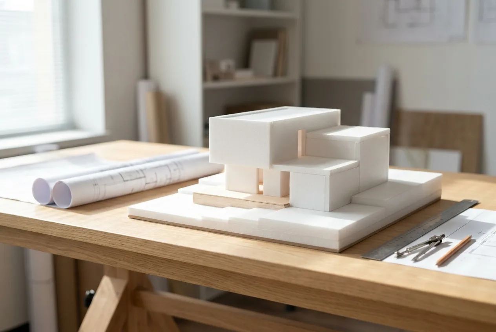

從一棟住宅到一座文化建築,我們以同樣的嚴謹對待每一塊基地。以下是近年的部分代表作品。

以上案例之名稱與資料為事務所作品集示意,實際合作內容將依您的基地與需求量身規劃。歡迎來信索取完整作品簡報。
索取完整作品簡報
 私人住宅私人住宅
私人住宅私人住宅 室內設計
室內設計 文化建築
文化建築 商業空間公共空間私人住宅室內設計文化建築商業空間公共空間
商業空間公共空間私人住宅室內設計文化建築商業空間公共空間